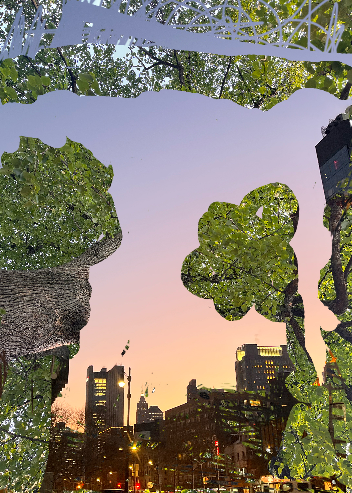

This project combines two images using a double exposure technique in Photoshop. I layered a photograph of trees with a city skyline to create a blended effect. The goal was to experiment with masking and blending images to create a new visual composition.